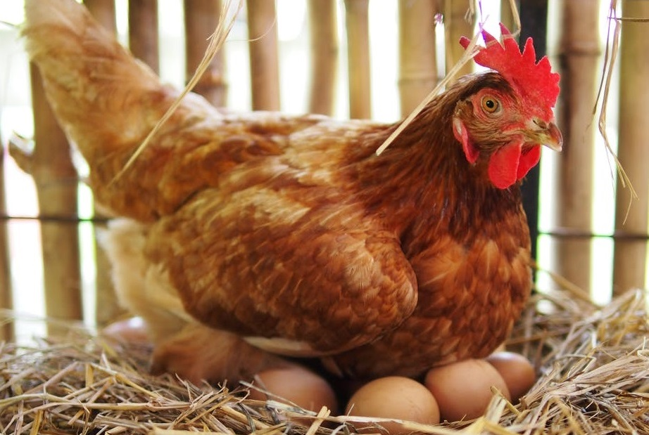
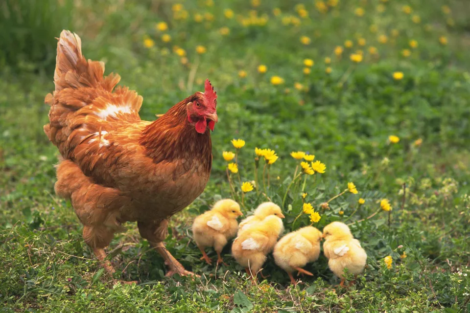
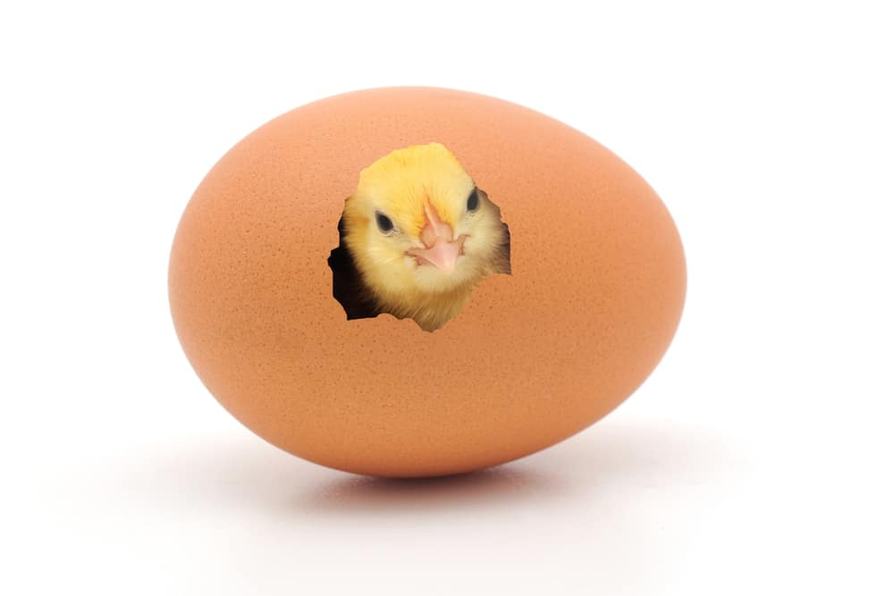
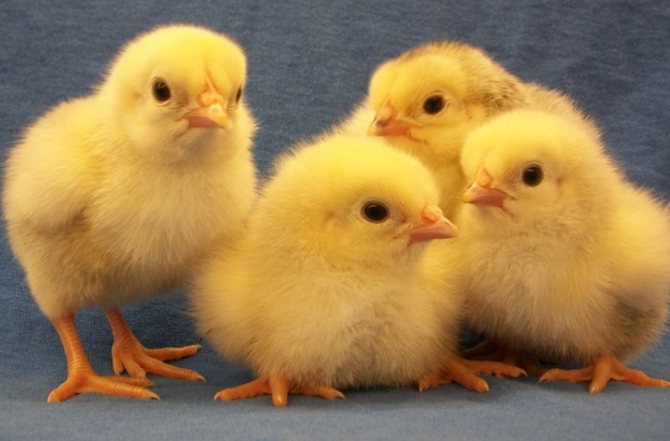

My petitions

End the sales of eggs from caged hens in Tesco
They are amazing animals to be around. Keeping my own hens and knowing their past has made me determined to improve the way hens are kept commercially.
I found out that Tesco is one of the few supermarkets that still sell eggs from caged hens.
After trying to end this through my own letter writing I have come to find that the written opinions of one person creates little impact on a company like Tesco.
However I believe that with the help of like-minded people on social media, we can make Tesco listen and create an impact.
I have been campaigning to end caged hen farming through letter writing for several years now. I have five hens myself, two of them are ex- commercial barn hens and one of them once lived in commercial colony cages. They are amazing animals to be around. Keeping my own hens and knowing their past has made me determined to improve the way hens are kept commercially. I found out that Tesco is one of the few supermarkets that still sell eggs from caged hens. After trying to end this through my own letter writing I have come to find that the written opinions of one person creates little impact on a company like Tesco. However I believe that with the help of like-minded people on social media, we can make Tesco listen and create an impact.
Food production affects everyone. Very few of us, however, know the truth behind the processes that leads to the food sold in our stores. A prime example of this is the egg productions industry. Lots of eggs sold to us in stores come from hens kept in "enriched cages". The conditions in these "enriched cages" are cramped and very restrictive. The hens never see the light of day or get to experience a natural lifestyle. In addition, the hens never get to experience the real outside world.
Which I believe is an essential element for a hen to live a happy and healthy life. This methods of egg farming are cruel, unnatural and inhumane. Tesco is one of the biggest supermarket chains in the country. If it stopped selling cage eggs it would drastically reduce the number of hens who spend their lives in cages. It would also send a message to other supermarkets that this is an option that is realistic and achievable. Companies such as Sainsbury’s, Marks & Spencers and Waitrose stopped selling eggs from caged hens years ago and new companies are listening to the public and realising that something has to change -- recently Mcdonald’s UK responded to a petition and agreed to stop using eggs from cage kept hens. Please sign this petition and take the first steps towards freedom for hens.


